汕尾实景照片素材
13 张不同照片。参考图为裁切/缩放版；照片年代、原始来源和许可均列于每项下方。素材不是完整成片。
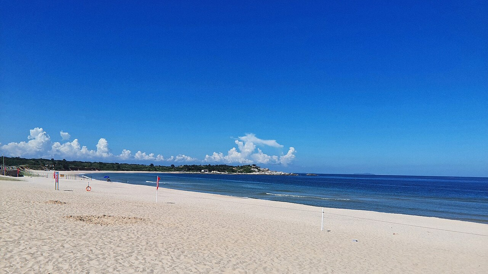
01 · 汕尾红海湾，沙滩与海面
HMGiovanniV · 2022-08-14 15:06:11工作副本：[1280, 720]；参考版：1920×1080来源 · CC BY-SA 4.0
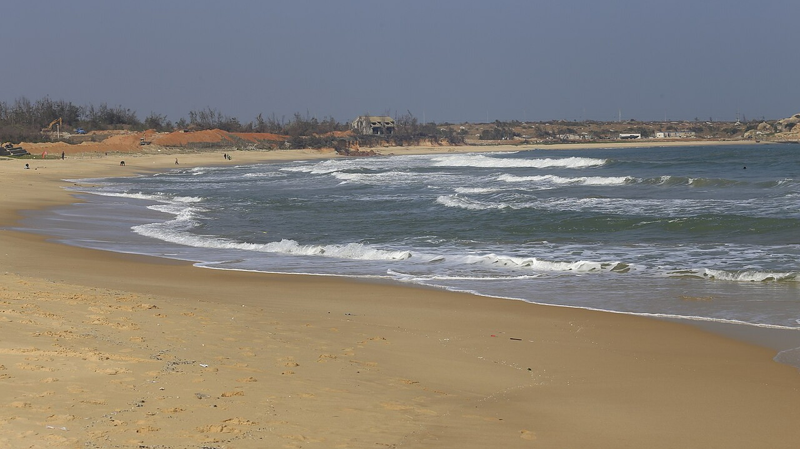
02 · 汕尾遮浪红海湾
Zhangzhugang · 2014-01-18 14:28:16工作副本：[1280, 853]；参考版：1920×1080来源 · CC BY-SA 4.0
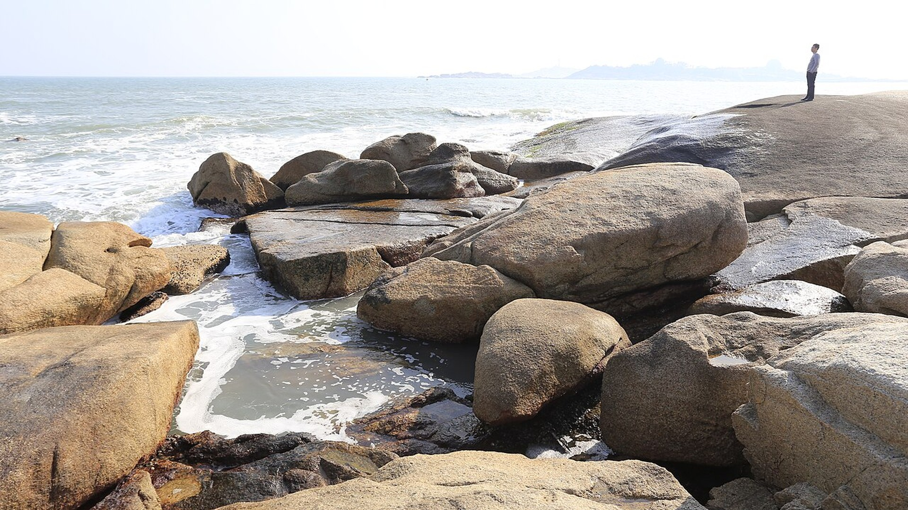
03 · 汕尾遮浪红海湾
Zhangzhugang · 2014-01-18 14:58:32工作副本：[1280, 853]；参考版：1920×1080来源 · CC BY-SA 4.0
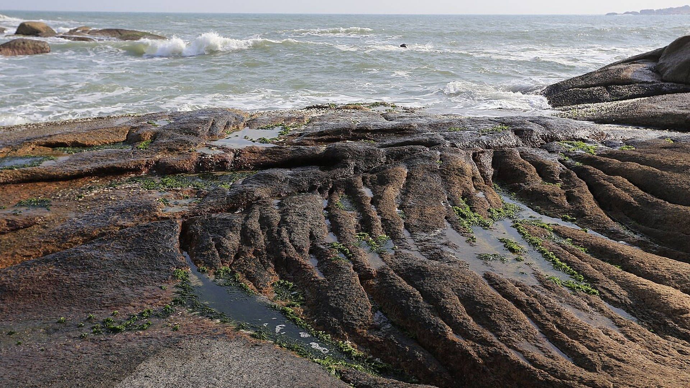
04 · 汕尾遮浪红海湾
Zhangzhugang · 2014-01-18 15:03:43工作副本：[1280, 853]；参考版：1920×1080来源 · CC BY-SA 4.0
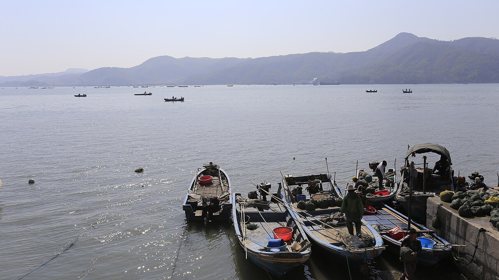
05 · 汕尾渔港
Zhangzhugang · 2014-01-18 11:18:05工作副本：[1280, 853]；参考版：1920×1080来源 · CC BY-SA 4.0
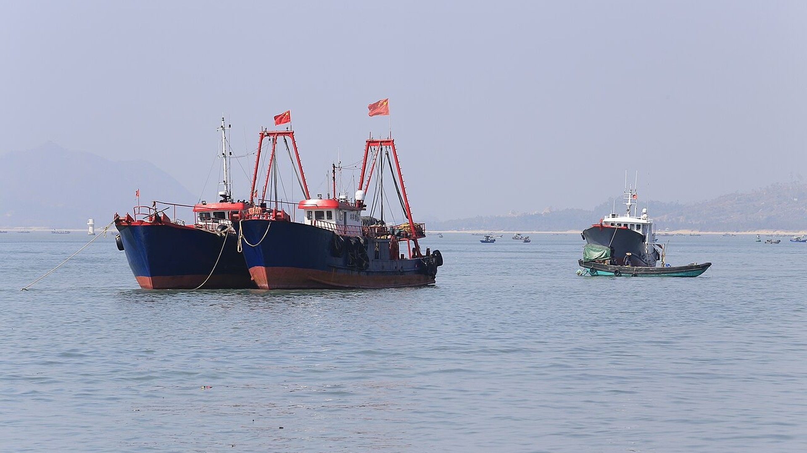
06 · 汕尾渔港
Zhangzhugang · 2014-01-18 11:47:43工作副本：[1280, 853]；参考版：1920×1080来源 · CC BY-SA 4.0
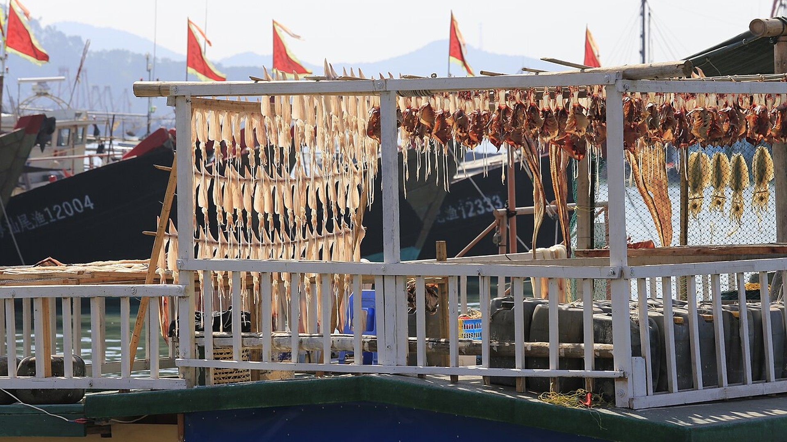
07 · 汕尾渔港
Zhangzhugang · 2014-01-18 11:54:45工作副本：[1280, 853]；参考版：1920×1080来源 · CC BY-SA 4.0
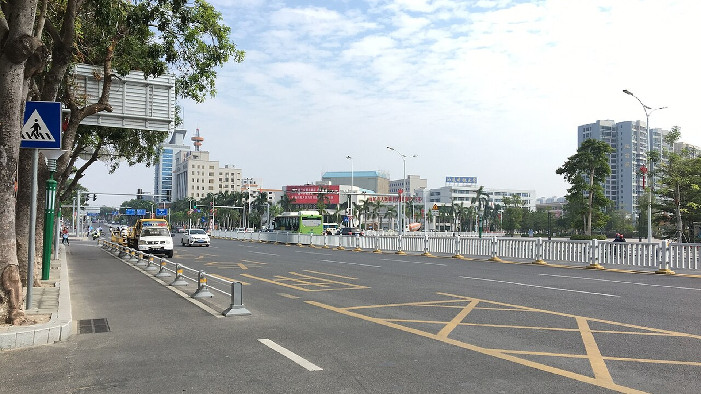
08 · 汕尾大道
Qwer132477 · 2018-11-12 11:34:03工作副本：[1280, 960]；参考版：1920×1080来源 · CC BY-SA 4.0
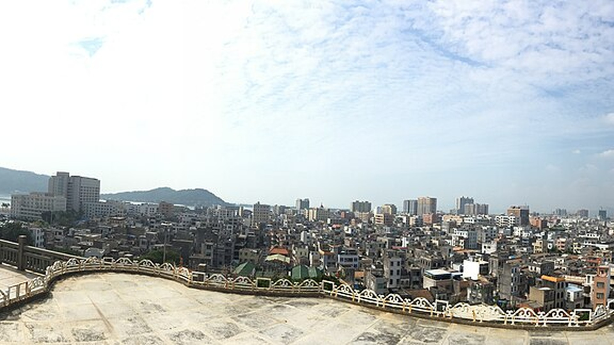
09 · 俯瞰汕尾城区全景
Qwer132477 · 2018-11-12 12:44:07工作副本：[1280, 324]；参考版：1920×1080来源 · CC BY-SA 4.0
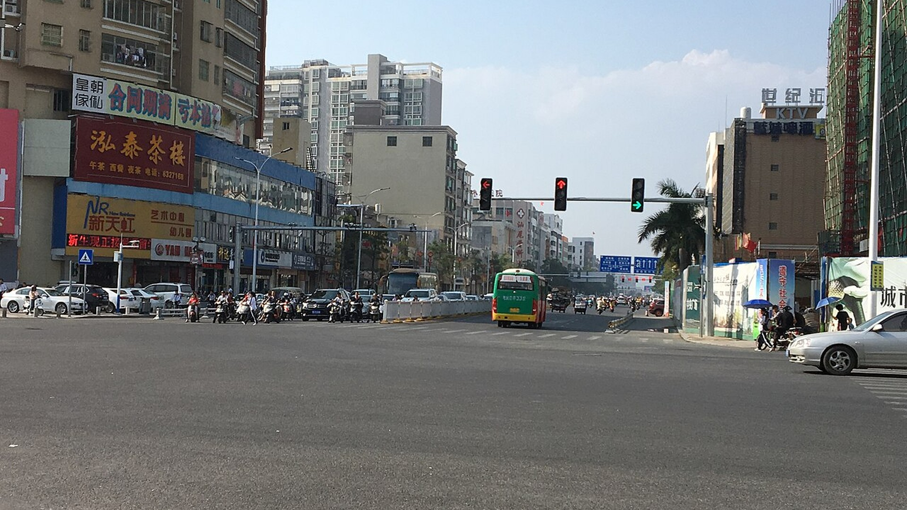
10 · 汕尾通航路与汕尾大道交界
Qwer132477 · 2018-11-12 14:21:03工作副本：[1280, 960]；参考版：1920×1080来源 · CC BY-SA 4.0
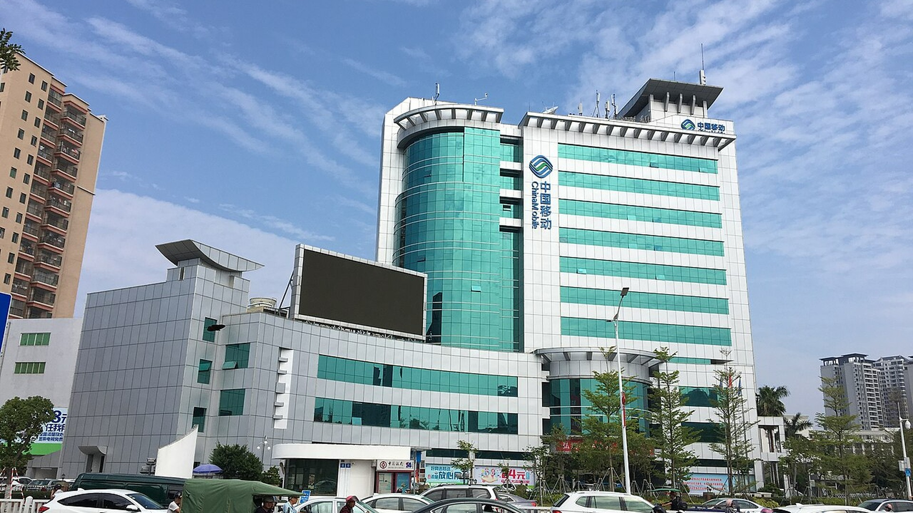
11 · 汕尾城区建筑与城市环境
Qwer132477 · 2018-11-12 11:31:55工作副本：[1280, 960]；参考版：1920×1080来源 · CC BY-SA 4.0
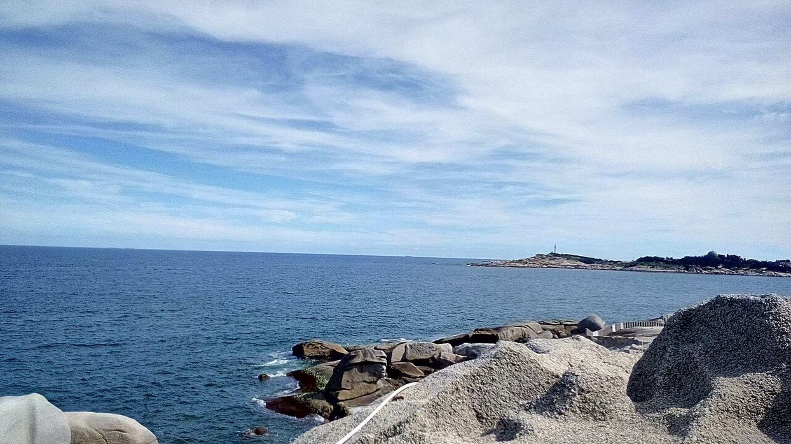
13 · 汕尾海岸一景
TrutH SuiTeR · 2015-08-01工作副本：[1280, 960]；参考版：1920×1080来源 · CC BY-SA 4.0
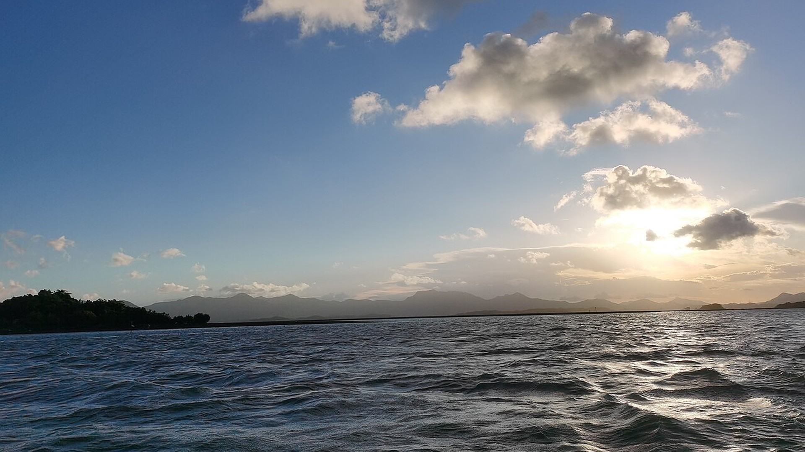
14 · 汕尾品清湖夕阳
GEO-GZHU · 2022-08-16 18:19:49工作副本：[1280, 960]；参考版：1920×1080来源 · CC BY-SA 4.0
通用视频：不是汕尾实拍
不得冒充红海湾、汕尾渔港等真实地点。严格的本地实景片建议不用。
通用华南渔港/渔船出海氛围镜头（不是汕尾实拍）
中国新闻网 · CC BY 3.0来源
通用海浪/沙滩过渡镜头（不是汕尾实拍）
Liuxingy · CC BY-SA 4.0来源
通用海浪与环境声镜头（不是汕尾实拍）
LN9267 · CC BY 3.0来源
请阅读 START_HERE.md、ATTRIBUTION.md 与 VIDEO_ATTRIBUTION.md。所有参考图均有尺寸变换；视频有截取及转码。